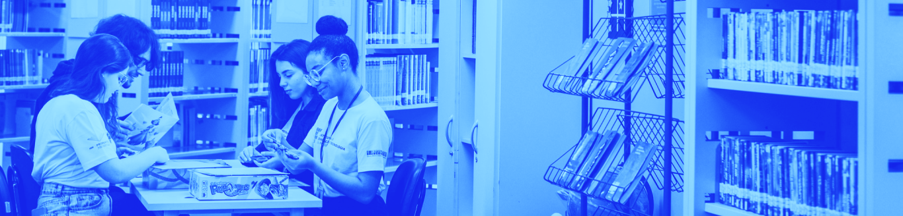

Biblioteca de Materiais Complementares
Agora, você terá a oportunidade de acessar uma Biblioteca de Materiais Complementares para aprofundamento nos conteúdos específicos trazidos nesta unidade, com livros, textos e artigos relacionados aos temas trabalhados aqui, para ajudá-lo a construir o seu problema de pesquisa. O intuito é que tais materiais possam lhe proporcionar novos conhecimentos para a construção do seu Memorial e problema de pesquisa. Este recurso estará disposto em forma de estante virtual, com botões interativos que darão acesso aos diferentes materiais propostos. Aproveite!

Paulo Freire
#Autonomia (psicologia)
#Educação
#Ensino
#Prática de ensino
#Professores
#Formação profissional
Clara B. Mindal (UFPR)
#Narrativa
#Memorial
#Formação de professores
Miriam Buogo (UFRGS) e Gardenia de Castro (UFSC)
#Memorial de formação
#Autobiografia
#Educação em saúde
#Educação em enfermagem
Maria Natália Valério Bittencourt (UFU)
#Memorial de formação #Afetividade #Aprendizagem #Desenvolvimento Humano
Marie Christine Josso (Universidade de Genebra)
#Dialética das relações
#Processo de formação
#Conhecimento de si #Memória
Marinalva Lopes Ribeiro
#Memorial de formação
#Autobiografia
#Educação em saúde
#Educação em enfermagem
Raimundo Sousa, Renato Pinheiro da Costa, José Valtemir Ferreira da Silva
#Pesquisa em educação
#Base epistemológica
#Materialismo histórico dialético
Eder Alonso Castro
#Ciência da Educação
#Ética e complexidade
#Ética na pesquisa educacional
Bernardete A. Gatti
#Pesquisa em educação
#Concepções de pesquisa
#Cotidiano escolar
#Estudos biográficos #Etnografia #Quantitativo #Qualitativo
Olinda Maria Noronha (UNISAl)
#Práxis e educação
#Marxismo
#Educação